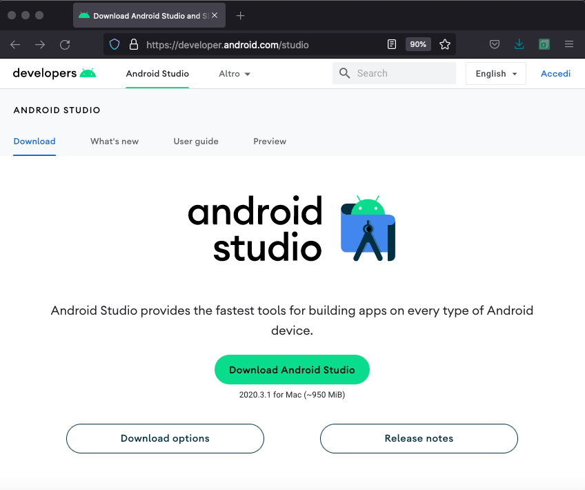

Android studio è un ambiente di sviluppo con gli strumenti necessari per programmare e creare app sul sistema operativo Android. Si può installare e usare gratuitamente. Dispone di un editor IDE con layout visuale, funzione di debug e consente la personalizzazione dei tool SDK per lo sviluppo in Java e NDK (Natural Development Kit) per lo sviluppo in C/C++.
Per poter scaricare e installare Android Studio vai sul sito ufficiale e clicca su Download Android Studio.

Nella schermata successiva accetta le condizioni di servizio. Poi clicca su Donwload Android Studio.
Una volta finito il Download clicca sul file scaricato, dovrebbe apparirti questa schermata, quindi trascina android studio tra le tue applicazioni di sistema. Finito il caricamento visualizzerete Android Studio tra le vostre app.
Per creare un nuovo proggetto clicca su new project ti apparirà una schermata dove in ordine abbiamo:
Name, assegna un nome al proggetto
Pakage name, viene autocompletato
Save location, percorso sul quale viene salvato il proggetto
Language, qui puoi scegliere se programmare in kotlin o java.
minimum SDK, puoi lasciare i parametri predefiniti. Vedremo in seguito a cosa servono.
Fatto questo per completare la creazione del nuovo proggetto imposta la tipologia di Activity iniziale come vuota, ossia la tua ipotetica prima pagina.
Una volta confermato al termine del proccesso si aprirà la finestra del proggetto
Ora che abbiamo creato il nostro proggetto andiamo a vedere quali sono i file principali
Activity: tipo di componente che fornisce un'interfaccia utente (UI). Un app può essere formata da un activity o più di una, in questo caso devono essere collegate tra loro per formare un esperienza all'utente.
MainActivity (è un activity): inizia quando l’utente clicca sull’app e la fa partire, l'utente può essere indirizzato all’activity main anche tramite una notifica oppure tramite un’altra app.
Percorso per raggiungerla App → package name → MainActivity questa è l'attività principale. Quando si esegue l’app il sistema genere una nuova MainActivity ne istanzia
una nuova.
Activity_main.xml: file xml definisce il layout per la UI dell'attività.
Percorso per raggiungere il file: App → res → layout → activity_main.xml questo.
AndroidManifest.xml: descrive le caratteristiche fondamentali dell’app e definisce ciascuno dei suoi componenti.
Gradle Script : build.gradle esistono due file di questo tipo, uno dedicato al progetto e l’altro per il modulo (ogni modulo ha il proprio file, nei progetti semplici in genere abbiamo solo un modulo).